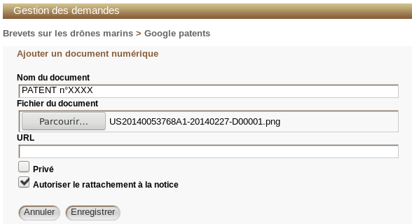

Valider puis traiter une demande de recherche
Lorsqu'une demande de recherche est enregistrée, un utilisateur en confirme la prise en compte en modifiant deux informations :
- le statut de la demande :
Validé, - l'attribution de la demande : un utilisateur est indiqué, il sera en charge du traitement.
ProcédureValider et assigner une demande de recherche⚓
Aller dans
Demandes>Listes:Demandes à validerValider la demande
Dans le tableau des demandes, cocher la case à droite de la ligne
Cliquer sur
Passer les demandes sélectionnées dans l'état :Validé
Remarque
Une fois la demande validée, la liste affichée correspond à
Demandes>Listes:Demandes validées.Pour valider plusieurs demandes, il est possible de cocher plusieurs demandes avant de les valider ou revenir dans
Demandes>Listes:Demandes à validerpour afficher la liste des demandes à valider et recommencer.Cliquer sur la demande
Un clic sur la demande affiche l'ensemble des informations correspondant à celle-ci.
Cliquer sur
ModifierCompléter le formulaire de modification de la demande
Sélectionner un utilisateur auquel est
attribuéla demande.Enregistrerpour valider les modifications
Une fois la demande validée, des actions sont créées par l'utilisateur. Elles permettent de décrire les étapes de traitement de la demande ou d'initier une interaction entre le lecteur et l'utilisateur.
ProcédureAjouter une action à une demande de recherche⚓
Aller dans
Demandes>Listes:Demandes validéesCliquer sur la demande concernée
Cliquer sur
Ajouter une actionCompléter le formulaire de
création d'une actionChoisir un
type d'action
Complément⚓
Quatre actions sont disponibles, elles traduisent des intentions différentes.
Question/réponse: elle permet de poser une question au lecteur par exemple pour préciser sa demande,Recherche: elle permet de noter les recherches effectuées par l'utilisateur et les résultats obtenus,Information complémentaire: elle permet de préciser la demande,Rendez-vous: elle permet de demander un rendez-vous auprès de la bibliothèque ou centre de documentation si l'action provient du lecteur, si l'action est émise par l'utilisateur c'est une demande de rendez-vous auprès du lecteur.
Même si toutes ces actions n'ont pas vocation à susciter une réponse de la part du lecteur, elles sont toutes visibles par le lecteur qui a la possibilité d'intervenir et de répondre aux actions.
- Choisir un
statut de l'action
Complément⚓
En attente: correspond à une action planifiée mais pas encore démarrée, par exemple un rendez-vous à confirmer, une recherche prévue...Ouvert: l'action a démarré et est toujours en cours.Fermé: l'action est terminée.Saisir un
sujetet compléter éventuellement dansdétailles actions entreprisesCocher
Privési l'action ne doit pas être visible par le lecteur
- Laisser la
date de débutà la date du jour
Conseil
Si l'action est créée
En attente, lors du passage de l'action enOuvertla date de début peut être modifiée pour la faire correspondre à la date du changement de statut.Définir éventuellement une
échéance demandéeLaisser à 0 le
Temps passé, leCoûtet laProgression
Enregistrer
Une fois l'action créée, il est possible de renseigner sa progression, les coûts liés et le temps passé.
ProcédureModifier une action et renseigner sa progression⚓
Aller dans
Demandes>Listes:Demandes validéesCliquer sur la demande concernée
Dans le tableau des actions, cliquer sur l'action à renseigner
Cliquer ensuite sur
Modifierpour accéder à l'actionModifier une action Modifier le
Temps passé (H)Le temps passé permet d'évaluer le temps qui a été nécessaire pour effectuer une action.
Saisir une valeur dans
Temps passé (H)Cliquer sur
Enregistrer
Truc & astuce
Une valeur décimale peut être utilisée grâce au point, par exemple 1.5.
Modifier le
coûtLe coût d'une action peut être utilisé pour, par exemple, noter l'achat d'un article chez un éditeur scientifique.
Saisir une valeur dans
Coût
Cliquer sur
Enregistrer
Truc & astuce
Une valeur décimale peut être utilisée grâce au point, par exemple 1.5.
Modifier la
progressionLa progression a une valeur indicative pour le lecteur qui peut consulter sur son compte l'évolution de sa demande.
Saisir une valeur entre 0 et 100 (%) dans
Progression
Cliquer sur
Enregistrer
La progression est représentée par une barre dont la largeur correspond au pourcentage renseigné.
Modifier la
progressionglobale du traitement de la demandeEn plus de renseigner la progression pour chaque action menée, il peut également être intéressant de faire évoluer la progression globale au niveau de la demande.
- Cliquer sur
Retourdans l'action pour quitter l'action et revenir sur la demande - Cliquer sur
Modifierdans la demande
Modifier une demande Saisir une valeur entre 0 et 100 (%) dans
ProgressionCliquer sur
Enregistrer
- Cliquer sur
Pour pouvoir réaliser un rapport documentaire lié à une demande de recherche, il faut attacher des notes aux actions. En effet, ce sont elles qui seront exportées dans le rapport.
ProcédureAttacher une note à une action⚓
Aller dans
Demandes>Listes:Demandes validéesCliquer sur la demande concernée
Cliquer sur l'action concernée dans le tableau
Remplir le formulaire de création d'une note
Pour valider la visibilité de cette note auprès du lecteur ainsi que son inclusion ou non dans le rapport documentaire, la note peut être marquée comme :
Privé: si la note ne doit pas être affichée dans l'OPAC auprès du lecteur (icône visible sur la note : ),Inclure dans le rapport documentaire: si la note doit être utilisée par la suite dans un rapport documentaire (icône visible sur la note : ),Marquer comme lue :afin que l'icône de notification présente sur la note soit marquée comme lue (icônes : pour lue et pour non lue).
Exemple
Pour une demande de bibliographie, il est intéressant d'indiquer les références trouvées, elles seront ensuite mises dans le rapport documentaire.
Pour une question/réponse, la note peut permettre d'afficher la réponse à la question du lecteur. Le lecteur peut répondre à la note de l'utilisateur, sa réponse est également une note.
Cliquer sur
Ajouter une notepour valider la note
En plus des notes, il peut être intéressant d'attacher un document numérique à une action : par exemple des liens vers des sites internet ou un article scanné.
ProcédureAttacher un document numérique à une action⚓
Aller dans
Demandes>Listes:Demandes validéesCliquer sur la demande concernée
Cliquer sur l'action concernée dans le tableau
Cliquer sur
Ajouter un document numériqueAjouter un document numérique à une action Remplir le formulaire pour
ajouter un document numériqueSaisir un
nom du document
Si le nom n'est pas renseigné, il reprend le nom du fichier du document ou l'URL indiquée.
Sélectionner un
Fichier du documentà l'aide du boutonParcourirOU remplir uneURLCocher
Privéafin de ne pas rendre visible le documentCocher
Autoriser le rattachement à la noticeafin de rattacher ultérieurement le document à la notice de la demande.
Rattachement d'un document numérique à une demande Enregistrerpour valider